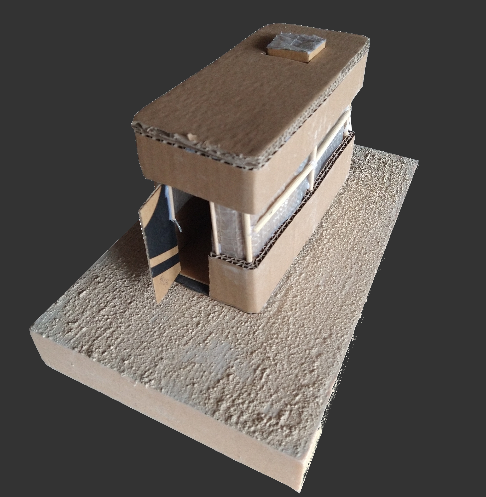
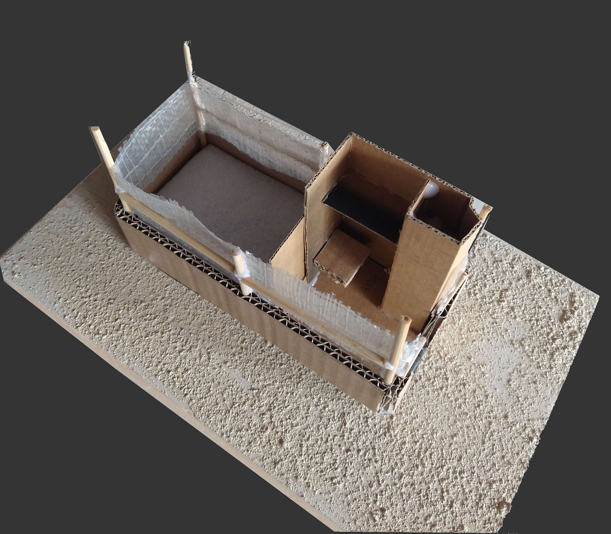

Landscape rehabilitation of Stavros, Town were Zorba the Greek was filmed with minimal & pontual (primary) and linking (secundary) interventions. Group: André Andrade, David Romero, Joel Gras
bla

